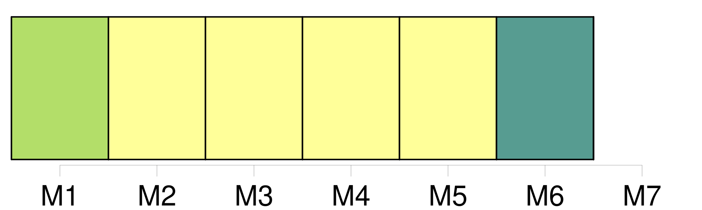
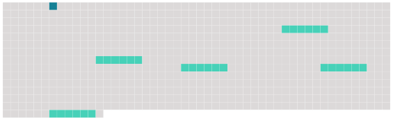

Longueur nb maillons : 6 mentions |
 |
Article 23 [5 phrases] Toutefois, les États qui ne sont pas membres du Fonds monétaire international et dont la législation ne permet pas d'appliquer les dispositions [du paragraphe 1 du présent article] , peuvent, au moment de la ratification ou de l'adhésion, ou à tout moment par la suite, déclarer que la limite de responsabilité du transporteur prescrite à l'article 21 est fixée, dans les procédures judiciaires sur leur territoire, à la somme de 1500000 unités monétaires par passager ; 62500 unités monétaires par passager pour ce qui concerne le paragraphe 1 de l'article 22 ; 15000 unités monétaires par passager pour ce qui concerne le paragraphe 2 de l'article 22 ; et 250 unités monétaires par kilogramme pour ce qui concerne le paragraphe 3 de l'article 22. [4 phrases] Le calcul mentionné dans la dernière phrase [du paragraphe 1 du présent article] et la conversion mentionnée au paragraphe 2 du présent article sont effectués de façon à exprimer en monnaie nationale de l'État partie la même valeur réelle, dans la mesure du possible, pour les montants prévus aux articles 21 et 22, que celle qui découlerait de l'application des trois premières phrases [du paragraphe 1 du présent article]
Les États parties communiquent au dépositaire leur méthode de calcul conformément [au paragraphe 1 du présent article] ou les résultats de la conversion conformément au paragraphe 2 du présent article, selon le cas, lors du dépôt de leur instrument de ratification, d'acceptation ou d'approbation de la présente convention ou d'adhésion à celle -ci et chaque fois qu'un changement se produit dans cette méthode de calcul ou dans ces résultats. [2 phrases]
La mesure du taux d'inflation à utiliser pour déterminer le coefficient pour inflation est la moyenne pondérée des taux annuels de la hausse ou de la baisse des indices de prix à la consommation des États dont les monnaies composent le droit de tirage spécial cité au [paragraphe 1 de l'article 23] |
 |
Il est possible de télécharger la ressource sur la page Ortolang |
Si vous avez des questions ou vous voyez des erreurs, merci d'envoyer un mail à silvia.federzoni89@gmail.com |